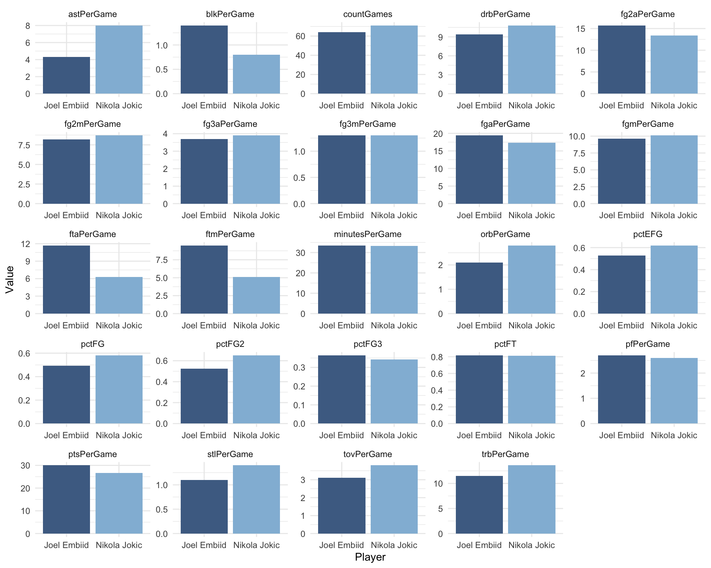
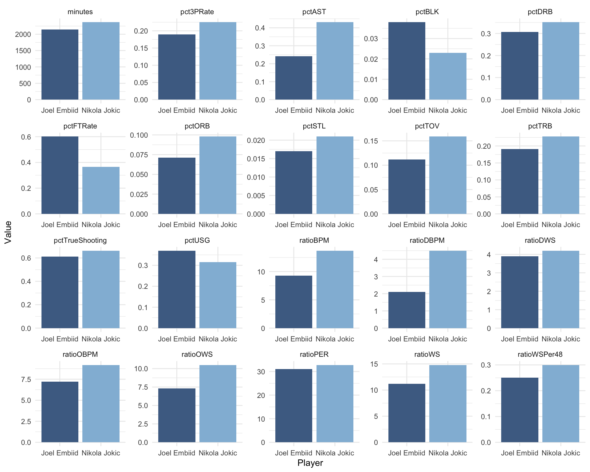

In the 2021-2022 season there have been two dominant foreign centers in the NBA, Nikola Jokic and Joel Embiid. Both of them are in the front of the MVP race with neither being the clear favorite to win it. We decided to look at various statistics to compare both players and come to a conclusion of who should win MVP for the 2021-2022 season.
First we prepped our data space.
source("R-Prep.R")
library(ghibli) #for additional colorsNext we gathered the data frames we wanted to use and created a filter for the players we were going to analyze with NBAstatR
bref_players_stats(
seasons = 2022,
tables = c("advanced", "totals", "per_game"),
)We’re going to be comparing Nikola Jokic and Joel Embiid, but if there’s any players you’re interested in comparing use the player filter here.
player_filter <- c("Nikola Jokic", "Joel Embiid")First we decided to analyze the per game statistics. We filtered for our players and got rid of any unnecessary statistics. Then we plotted every statistic to compare them.
#PER GAME STATS
per_player_data <-
dataBREFPlayerPerGame %>%
filter(namePlayer %in% player_filter)
#Converting into long format
per_player_data_long <-
per_player_data %>%
select(namePlayer,
yearSeason,
countGames,
pctFG:pctFT,
minutesPerGame:ptsPerGame) %>%
pivot_longer(cols = c(-namePlayer, -yearSeason))
ggplot(
data = per_player_data_long,
aes(x = namePlayer, y = value, fill = namePlayer))+
geom_bar(stat = "identity")+
facet_wrap(~name, scales = "free")+
labs(x = "Player", y = "Value")+
theme_minimal()+
scale_fill_manual(values = ghibli_palettes$YesterdayMedium[c(4, 7)])+
theme(legend.position = "none")
For the per game statistics there isn’t a clear advantage to either player. Embiid scores more point per game and has more blocks per game, but Jokic assists on more scores and shoots higher percentages from the field.
These statistics weren’t conclusive in determining who was the better player. So we decided to look at the advanced statistics to see if they showed a more clear picture.
#ADVANCED STATS
adv_player_data <-
dataBREFPlayerAdvanced %>%
filter(namePlayer %in% player_filter)
#Converting into long format
adv_player_data_long <-
adv_player_data %>%
select(namePlayer, yearSeason, minutes:ratioVORP) %>%
pivot_longer(cols = c(-namePlayer, -yearSeason))
ggplot(
data = adv_player_data_long %>% filter(name%nin%"ratioVORP"),
aes(x = namePlayer, y = value, fill = namePlayer)
) +
geom_bar(stat = "identity") +
facet_wrap(~name, scales = "free") +
labs(x = "Player", y = "Value") +
theme_minimal() +
scale_fill_manual(values = ghibli_palettes$YesterdayMedium[c(4,7)]) +
theme(legend.position = "none")
After looking at the advanced statistics it appears that Jokic is the better player. Especially in the Box Plus Minus (BPM) and Win Shares (WS) statistics. These stats are designed to measure a player’s importance and impact to his team. Jokic’s impact can be seen in these statistics and it is clear that he has a larger impact on the floor then Embiid.
After reviewing the data I believe that Nikola Jokic should be awarded the Most Valuable Player of the 2021-2022 NBA season because of his value to his team and impact on the floor.